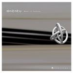

| Artist: | Naikaku-No-Wa |
| Title: | Wheels Of Fortune |
| Label: | FHNW-0305 |
| Length(s): | 6? minutes |
| Year(s) of release: | 2003 |
| Month of review: | [09/2003] |
| 1) | Please! | 6.03 |
| 2) | Go Home! | 13.14 |
| 3) | Memory | 6.04 |
| 4) | Trash Can | 4.26 |
| 5) | Crisis | 13.30 |
| 6) | Tiny Ego | 3.15 |
| 7) | Seven Minutes Squeezer | 10.29 |
| 8) | Hocus Pocus | 4.22 |
Memory opens with plodding rhythm guitars. We are now in progmetal territory. Surprising. In addition to the loud stuff there are also some atmospheric guitar lines and a ripping solo. It kicks ass. Trash Can opens with a screaming Japanese before running into a very fast guitar solo. The great thing is though that this is not just notes dancing before your very ears, but that there is something to it. The guys can play alright, but what they play is never subservient to the playing. A manicness that won't depress.
With Crisis we arrive at the longest track on the album, although not by a large margin. This is a pounding opening, the flute comes back into play. My feeling is that we are for a more epic song this time. Again, the Anekdoten mood is back (but no mellotron, sorry guys). Soon the song changes gear and the rhythm guitar work again is more in progmetal vein than anything else. But how does that work out with the flute I hear you say? Well, great. And the drummer is not keeping his hands still either. Time for the song to move out of the way and some improvisational elements to hop in. Occasional drums, guitar and flute vie for attention here. Every instrumentalist more or less seems to be doing what he likes now, chaos complete. Of course, this can not take too long and it doesn't and we come back to the a passage similar to the opening, rich in tension. After a bit of piece and quiet the progmetal side crops up again. Magnificent. Later the music becomes more meandering, moving back in time to something sounding like the underground rock band of the seventies. The progmetal influence doesn't depart though. Although I was expecting something epic, it seems the jazzrock side of it all (and yes some progmetal too|) wins out in the end. But the melodic is not forgotten or ignored. The melodic flute plus guitar ending is a winner.
Tiny Ego is a short one, but packs a bundle. The distorted guitar lines that open it are great, then the music dies down somewhat flowing into something melodic and melancholy. Again, a kind of Anekdoten feel here, but the instrumentation is very different. The loud parts are percussive and can be quite manic. Seven Minutes Squeezer is the final long track. A long stretched crescendo of flute and guitar, manic but melodic. That is important here: they play their chops, they play really well, their rock, they grind and experiment, but they always return to the melody.
And yes, the bonus of Hocus Pocus. This Focus track shows the band at their most humouristic and proficient. Great stuff, enthusing rock and no yodels (I won't tell you what they replaced it with).